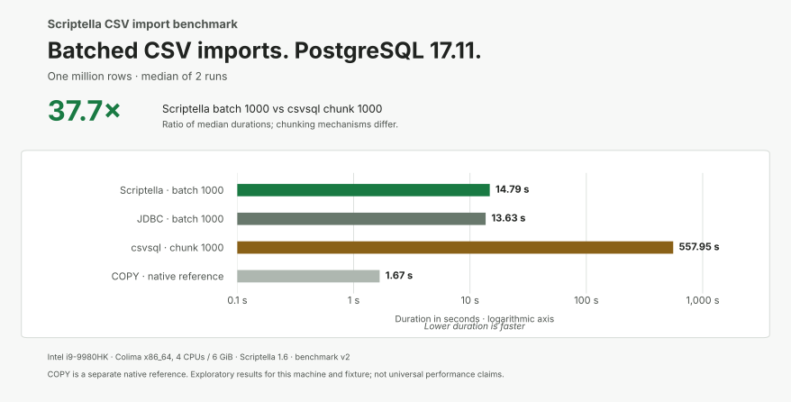
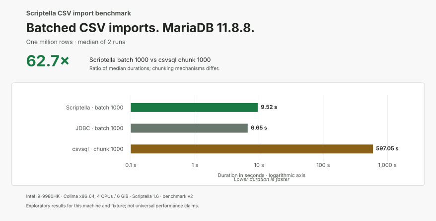

CSV import benchmarks
One million rows, two databases, and a reproducible comparison of Scriptella 1.6, handwritten JDBC, and csvsql.
Batched Scriptella imported the fixture in 14.79 seconds on PostgreSQL and 9.52 seconds on MariaDB on a local development machine. Handwritten JDBC was faster; csvsql’s tested direct-import workflow took about 9–10 minutes.
These are exploratory results for this workload and environment. JDBC batching and csvsql chunking use different mechanisms; PostgreSQL COPY is a database-specific reference.
Local development machine
The charts show median durations from two runs of the same million-row import. Lower is faster.


Measured on an Intel Core i9 Mac using Docker through Colima. See the full results and environment details, including individual runs and unbatched imports.
About the comparison
All import paths load the same CSV into a pre-created table, with one transaction per import and no indexes or transformations. Timings include client startup, parsing, insertion, and commit; setup and verification are excluded. Every measured import passed independent row-count and sampled-value checks.
The experiment uses Scriptella 1.6, Java 17, csvsql 2.2.0, PostgreSQL 17.11, and MariaDB 11.8.8 with normal database and driver defaults. See the methodology and limitations for the full comparison.
GitHub Actions reproduction
A separate Ubuntu 24.04 run showed the same ordering: batched Scriptella imported the million rows in 6.86 seconds on PostgreSQL and 4.45 seconds on MariaDB. These are single observations, kept separate from the local medians. See the CI results.
Run it yourself
The benchmark runs with Docker Compose and includes all dependencies. The repository instructions cover running the comparison, inspecting results, and repeating it on your own hardware.